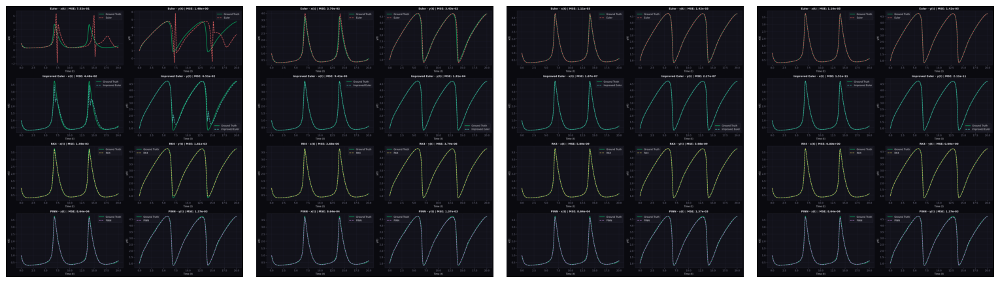
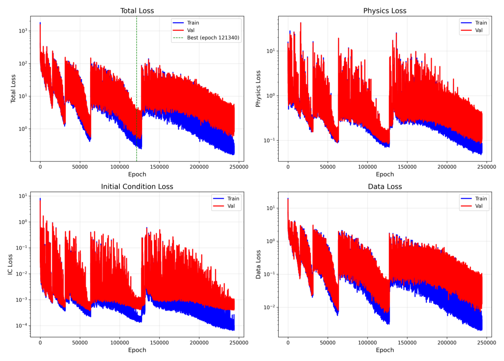
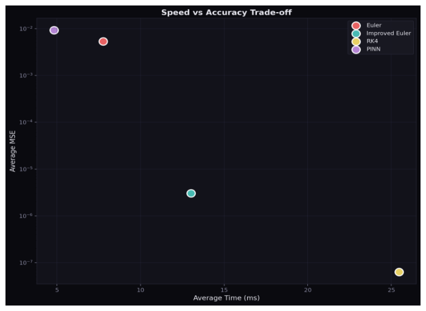
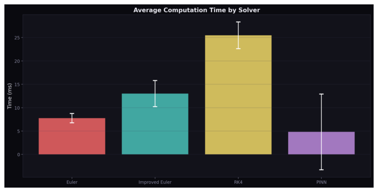
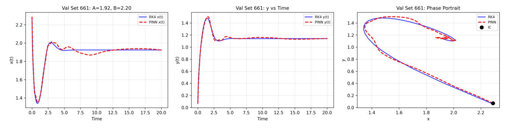
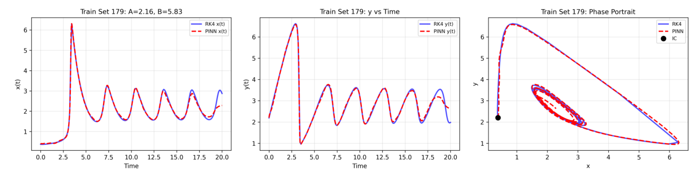

Overview
The project evaluated when a physics-informed neural network can compete with established numerical solvers on a nonlinear initial-value problem. The Brusselator—a two-state autocatalytic chemical oscillator—was selected because it can exhibit steady behaviour, sustained oscillations, sharp transients, and strong sensitivity to parameters.
Benchmark model
The Brusselator describes two coupled species, x and y, with nonlinear feedback through the autocatalytic term x²y. Its compact form makes it suitable for controlled solver comparisons while retaining challenging nonlinear behaviour.
dx/dt = A − (B + 1)x + x²y
dy/dt = Bx − x²yParameters A and B, together with the initial conditions, determine whether the solution approaches equilibrium or develops limit-cycle oscillations.
Methods
Euler
First-order explicit integration used as the simplest and least expensive baseline.
Improved Euler
A second-order predictor–corrector scheme offering better accuracy with modest added cost.
RK4
Fourth-order Runge–Kutta with four slope evaluations per step and substantially stronger convergence.
PINN
A neural network trained using governing-equation residuals, initial-condition loss, and supervised RK4 data.
The PINN used approximately 400,000 trainable parameters, GELU activation functions, Xavier initialization, and a weighted loss combining physics, initial-condition, and data terms. The weights were 1, 100, and 50 respectively.
Evaluation framework
Performance was assessed through both controlled local studies and a broader randomized test:
- Time-step convergence at Δt = 0.2, 0.05, 0.01, and 0.001.
- A high-resolution RK4 solution at Δt = 0.001 as the reference trajectory.
- 5,000 randomized trials spanning A ∈ [0.5, 2.5], B ∈ [1.0, 6.0], and initial conditions in [0, 3].
- Comparison of mean-squared error, variance, stability, and runtime.
- Qualitative inspection of phase, amplitude, and spurious oscillation errors.


Results
Lowest average error across 5,000 randomized trials.
Strong intermediate accuracy at the tested step size.
High variance and strong dependence on dynamical regime.
RK4 produced the best balance of accuracy, robustness, and computation time. At Δt = 0.01, its RMSE fell to 7.7 × 10⁻⁵, while Euler remained substantially less accurate. The PINN achieved competitive error in selected local cases, but its global performance was inconsistent.
PINN inference was fast after training, but the model required approximately seven days of training. For this low-dimensional ODE, that upfront cost outweighed the per-query inference advantage unless the trained model were reused for a very large number of forecasts or inverse problems.


PINN behaviour and limitations
The neural model did not fail uniformly. Its accuracy depended strongly on the qualitative regime of the system:
- In slowly varying or stiff-looking regimes, it introduced oscillations absent from the reference solution.
- In high-frequency regimes, phase and amplitude errors accumulated near later oscillations.
- The best validation loss occurred at epoch 63,116, after which validation error rose while training loss continued to decrease—evidence of overfitting.
The key conclusion was not that PINNs are ineffective, but that a classical solver was the more practical tool for this specific forward ODE problem. PINNs become more compelling when one trained surrogate must span many parameter combinations, incorporate sparse data, or support inverse problems.


Engineering skills demonstrated
This project developed transferable skills relevant to simulation and engineering analysis:
- Implementing and verifying explicit ODE solvers.
- Designing fair accuracy-versus-cost comparisons.
- Using reference solutions and randomized testing for model validation.
- Diagnosing instability, phase error, overfitting, and regime dependence.
- Communicating numerical results through plots, a GUI, and a formal technical report.